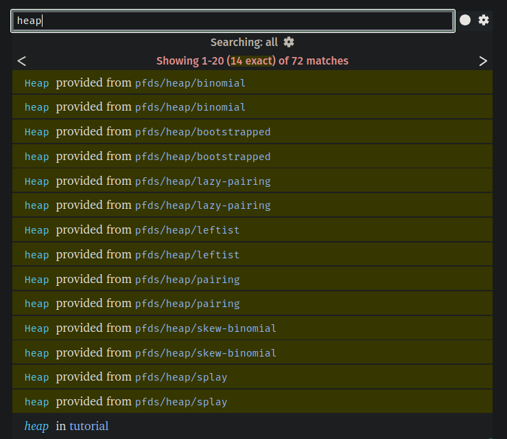

Just finished "Top K Frequent Elements" and wanted to write down my thought process while it is still fresh.
I also use this blog as a quick reference, so I wanted to add some notes on data/heap to my little cheatsheet.
We are given a list of numbers and need to return k most frequent elements in any order.
First thing that comes to mind is to build a dictionary that tracks how many times each value appears.
(define val->freq (make-hash))
(for ([i (in-list nums)])
(hash-update! val->freq i add1 0))That first step is pretty much optimal already. Next we need to traverse this dictionary and keep only the most frequent values, so a priority queue/heap is an obvious fit. Nothing is free though: inserts/removes are more expensive, but peeking the top is cheap.
When I just started with Racket, I did not want to install any packages and did not even realize we had a heap implementation available.

Top results of the quick docs lookup for heap-related modules are NOT very useful.
It lives here in data-lib package.
The most useful functions are make-heap, heap-add!, and heap-min.
heap-min is really more like "top", because with a custom comparator we can create either a min-heap or a max-heap.
Here is a max-heap version:
(require data/heap)
(struct item (val freq) #:transparent)
(define (item> lhs rhs) (> (item-freq lhs) (item-freq rhs)))
(define (top-k-frequent nums k)
(define val->freq (make-hash))
(for ([i (in-list nums)])
(hash-update! val->freq i add1 0))
(define h (make-heap item>))
(for ([(val freq) (in-hash val->freq)])
(heap-add! h (item val freq)))
(for/list ([it (in-heap/consume! h)]
[i (in-range k)])
(item-val it)))After the max-heap is built, in-heap/consume! pops items one by one from the top.
Each pop is O(log n), so this final loop is O(k log n).
This approach is not optimal, but it is straightforward and correct.
A simple improvement is to switch to a min-heap of size k.
Since result order does not matter, we can keep only current top k elements and drop the smallest whenever heap size goes above k.
(require data/heap)
(struct item (val freq) #:transparent)
(define (item< lhs rhs) (< (item-freq lhs) (item-freq rhs)))
(define (top-k-frequent nums k)
(define val->freq (make-hash))
(for ([i (in-list nums)])
(hash-update! val->freq i add1 0))
(define h (make-heap item<))
(for ([(val freq) (in-hash val->freq)])
(heap-add! h (item val freq))
(when (> (heap-count h) k)
(heap-remove-min! h)))
(for/list ([it (in-heap/consume! h)])
(item-val it)))Time to talk complexity. Let:
N= input lengthU= number of unique elements (U <= N)k= output size (k <= U)
For the min-heap approach:
- Building
val->freq:O(N)time,O(U)space - Processing
Uhash entries with heap capped atk:O(U log k)time - Consuming heap of size
k:O(k log k)time
So total time is O(N + U log k + k log k).
Because k <= U, we usually simplify that to O(N + U log k).
Worst case (U = N) gives O(N log k).
Space is O(U + k) (O(U) hash + O(k) heap; output list is also O(k)).
If we treat k <= U, that is effectively O(U).
Honestly, this is already solid, but asymptotically we can do better on time with bucket indexing. Instead of heap operations, we put each value into a vector bucket indexed by its frequency.
(define (vector-update! v i f)
(vector-set! v i (f (vector-ref v i))))
(define (top-k-frequent nums k)
(define val->freq (make-hash))
(for ([i (in-list nums)])
(hash-update! val->freq i add1 0))
(define N (length nums))
(define v (make-vector (add1 N) '()))
(for ([(val freq) (in-hash val->freq)])
(vector-update! v freq (lambda (x) (cons val x))))
(for*/fold ([acc '()] [n 0] #:result acc)
([bucket (in-vector v N -1 -1)]
[val (in-list bucket)]
#:break (= k n))
(values (cons val acc) (add1 n))))I am not convinced this is always faster in practice in Racket, but on paper inserts are cheaper than heap maintenance.
(I suspect vector-update! api is not provided by default for a reason, they probably don't want to encourage mutation so I don't expect this to be super efficient..)
Bucket complexity:
- Build hash:
O(N)time,O(U)space - Put
Uitems into buckets:O(U)time - Scan buckets from
Ndown until we collectk: worst caseO(N + k)time
Total time: O(N + U + N + k).
That can be simplified several valid ways:
O(N + U)O(N + k)- and with
k <= U <= N, simplyO(N)
Space:
- hash
O(U) - bucket vector
O(N) - bucket list nodes
O(U)
So O(N + U), and with U <= N, O(N).
So the tradeoff is roughly:
- min-heap: better memory when
kis small, butlog kfactor in time - buckets: better asymptotic time, but unconditional
O(N)bucket storage